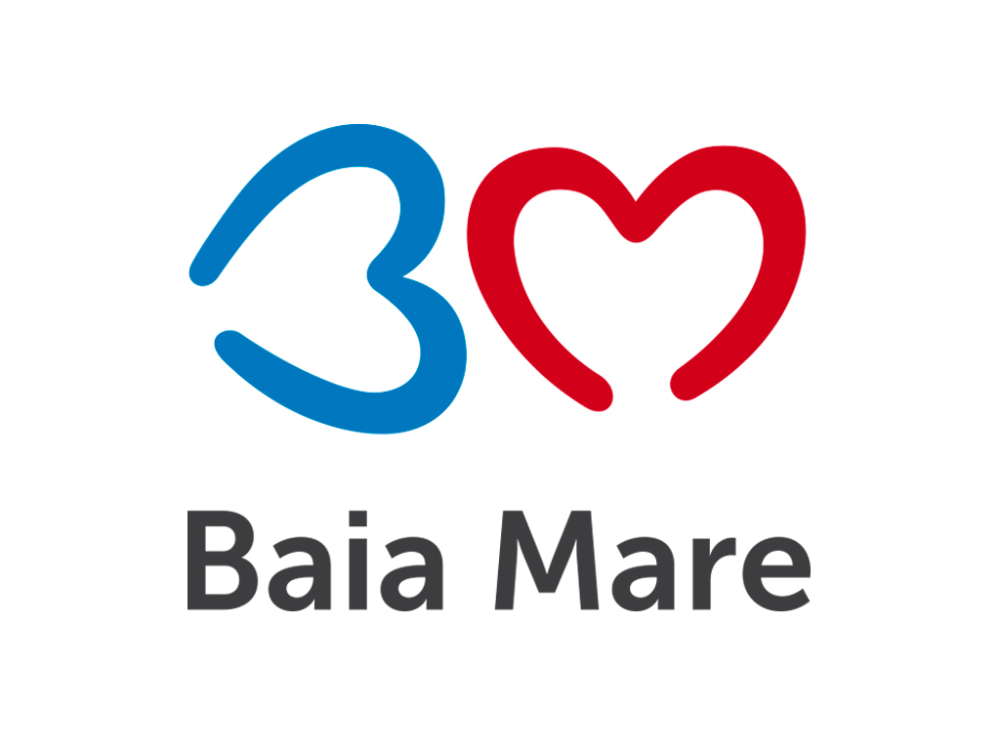
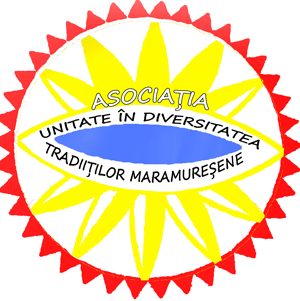

Maramureș County Council
The City Hall of Baia Mare
Maramures County Prefect Institution
"Petre Dulfu" County Library
Ethnography and Popular Art Museum of Baia Mare
Ethnography Museum of Sighetul Marmaţiei
The County Office for Culture, Cults, National Cultural Heritage
The Center of Writers from Maramures
The Arts Highschool of Baia Mare
"Liviu Borlan” Popular School of Art
Children's Palace, ”Dănţăuşii” şi ”Mugurii dănţăuşi”
Popular School of Art ”Gheorghe Chivu”
The „Tileguţa” Ensemble from Petrova, Land of Maramures
Baia Mare Planetarium
The Workshop of the Great Sculptor Vida Gheza
Art Museum
Mineralogy Museum
Museum of History and Archaeology
Stephen's Tower
Association "Unity in the diversity of Maramures traditions"